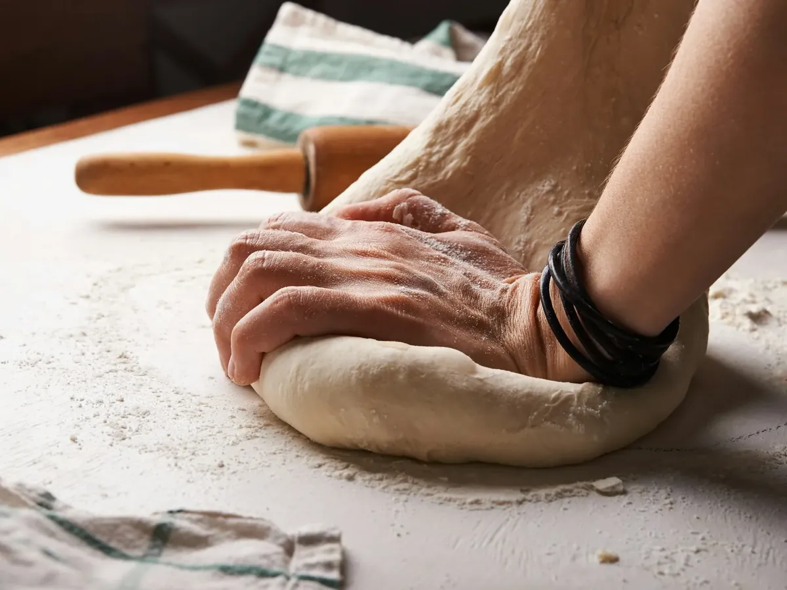
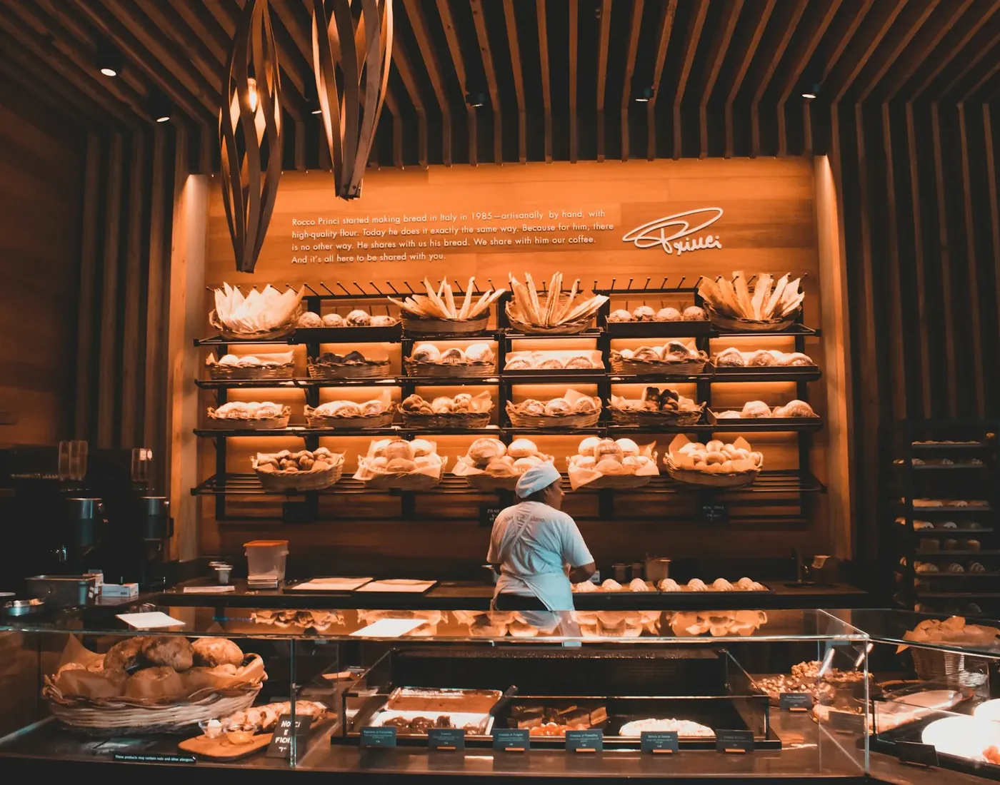
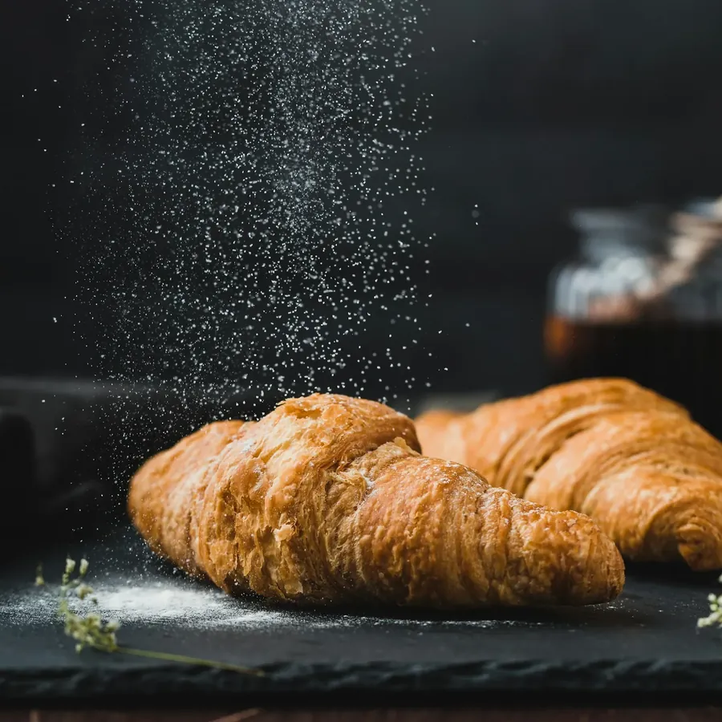
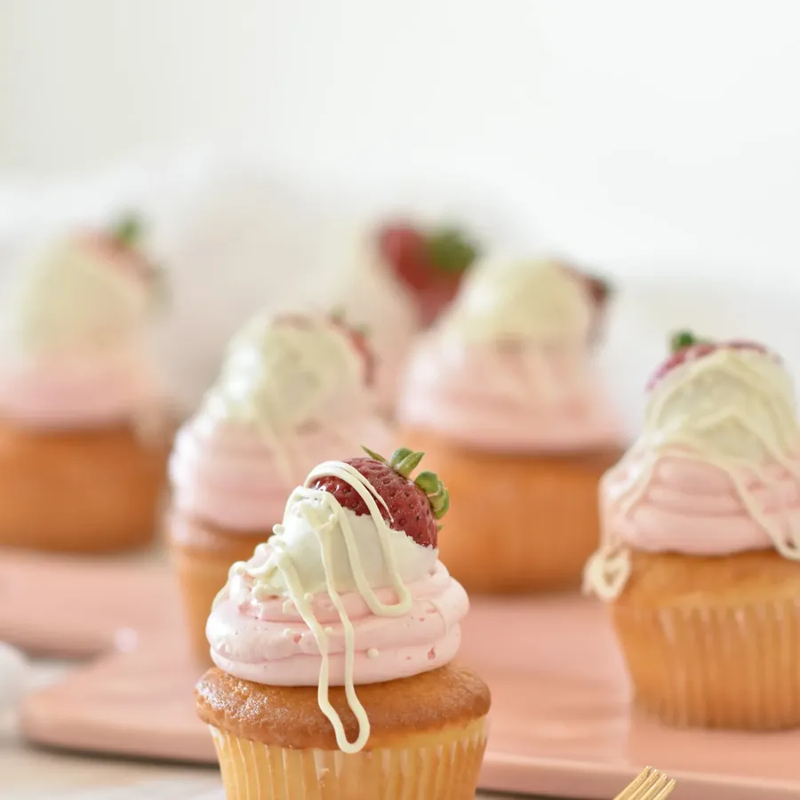
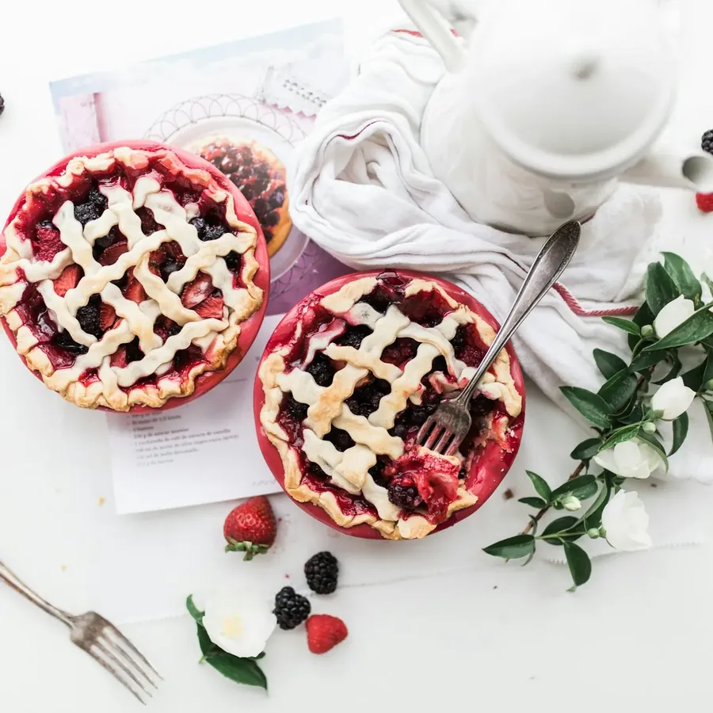
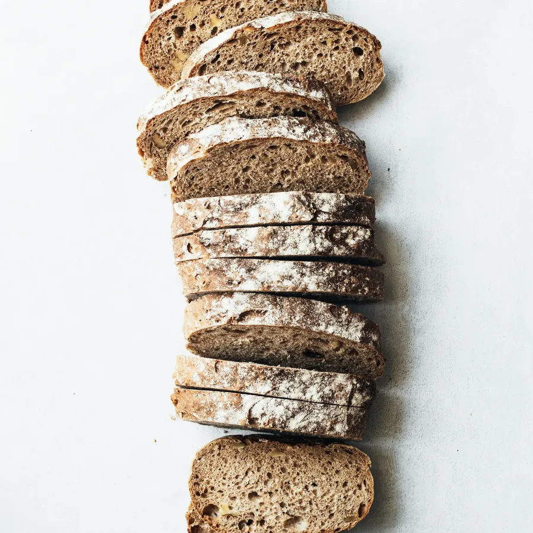
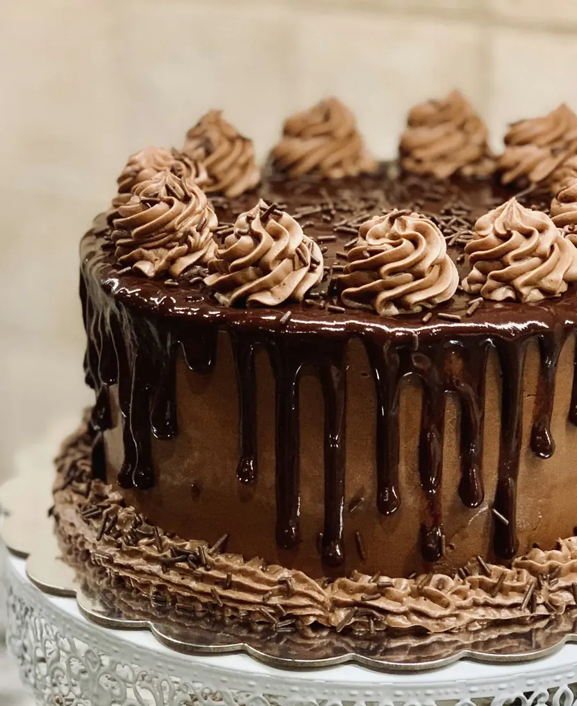
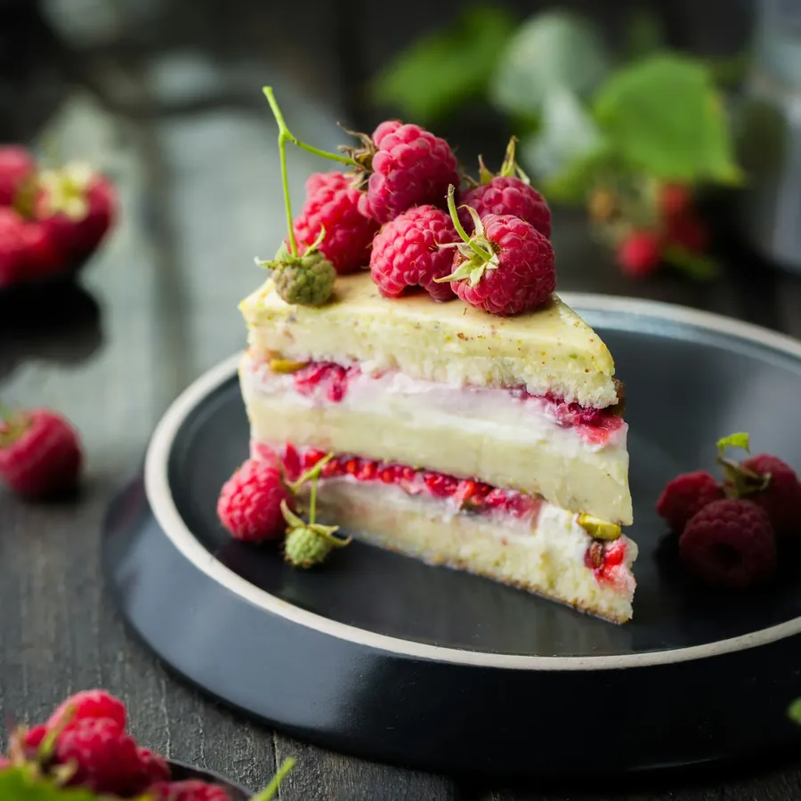
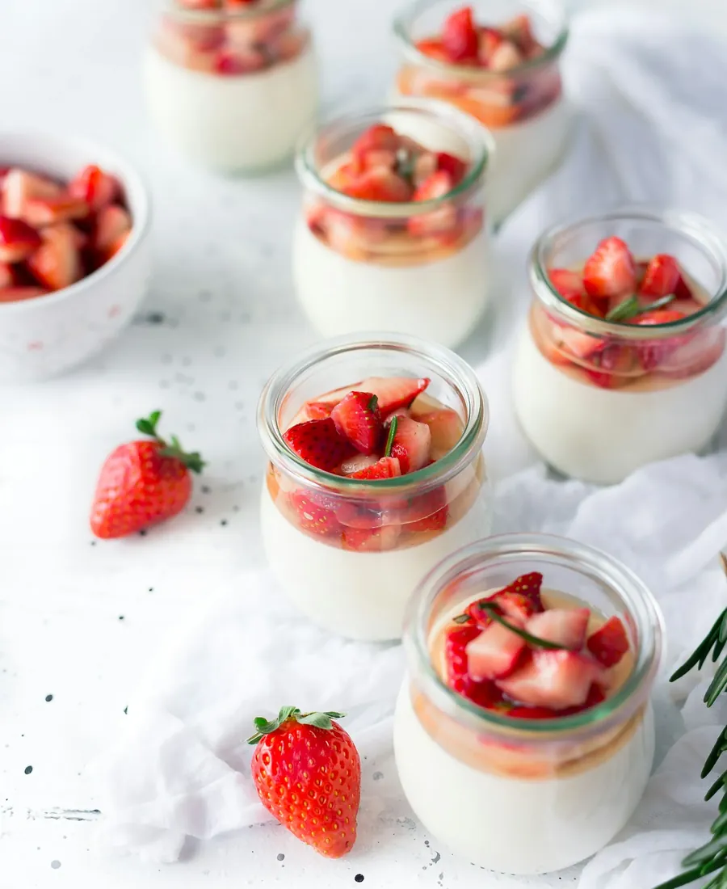
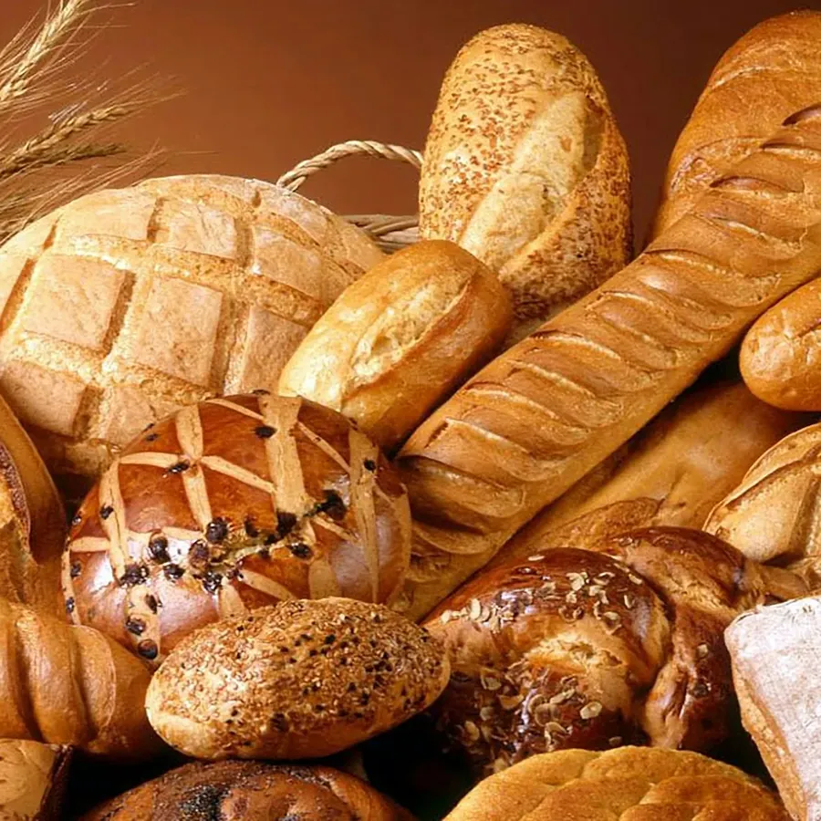

Brood
Voor elke dag, vers en met zorg gebakken. Vraag gerust wat er die dag in de rekken ligt.
Bakker aan de Stationsdreef
Fijnbakkerij Vincent in Roeselare is de bakker waar je komt voor je brood en buitengaat met iets lekkers erbovenop. Een taart voor een feest bestel je hier ook.

In de vitrine
Wat er precies ligt, wisselt met de dag en het seizoen. Zoek je iets speciaals, zeg het dan op voorhand.

Voor elke dag, vers en met zorg gebakken. Vraag gerust wat er die dag in de rekken ligt.

Iets zoets voor bij de koffie of voor zondagmorgen.

Kleine verwennerijen die altijd welkom zijn, ook om mee te nemen.

Een verjaardag, een communie, een feestje. Laat weten voor hoeveel mensen.

Met granen, zaden of zuurdesem. Vraag wat er die dag is.
Taarten op bestelling
Een verjaardag, een communie of gewoon een zondag met familie. Laat het op voorhand weten, dan ligt je taart klaar als je komt.




De bakkerij
Fijnbakkerij Vincent ligt aan de Stationsdreef in Roeselare. Een bakkerij waar je goeiedag zegt en waar je geholpen wordt zonder haast.
Op Google staat de zaak op 4,7 uit 160 reviews. Zoveel mensen nemen die moeite niet voor een bakker die ze maar half kennen.
Vragen
Staat je vraag er niet tussen? Bel gerust naar de winkel.
Ja. Bel naar 051 20 14 19, zeg wat je wil en wanneer je het komt halen.
Liefst een paar dagen, zeker voor een groot feest. Vraag het gerust bij het bellen.
De actuele uren vind je op Google of op de Facebookpagina. Rond feestdagen kunnen ze anders zijn.
Aan de Stationsdreef 129 in Roeselare. Met de routeknop hieronder zie je meteen waar.
Langskomen
Of bel even op voorhand, dan ligt je bestelling klaar als je binnenkomt.
Stationsdreef 129
8800 Roeselare
Ik maakte deze demo voor jullie om te tonen wat er kan. Na een kort gesprek maak ik er iets veel persoonlijkers van, helemaal naar jullie wens.
Vrijblijvend. Ik kom langs of we bellen.
Op maat, op jullie eigen domein.
Geen voorschot. Jullie betalen pas als alles klaar is.
Hosting, domeinnaam en kleine wijzigingen, zoals nieuwe openingsuren.
Omdat een voorbeeld meer zegt dan een mail. Zo zien jullie meteen wat er kan, en het kost jullie niets.
Nee. Het gesprek is vrijblijvend. Vinden jullie het niks, dan is het daarmee gedaan.
Na ons gesprek staat jullie site binnen 10 tot 14 dagen online.
Zeker. Jullie domeinnaam kan gewoon blijven, de nieuwe site komt in de plaats van de oude.
Nee, dat doe ik op basis van ons gesprek. Eigen foto's zijn mooi meegenomen, maar niet nodig om te starten.